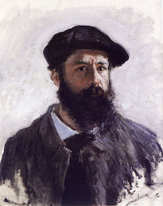
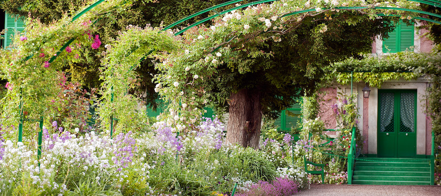
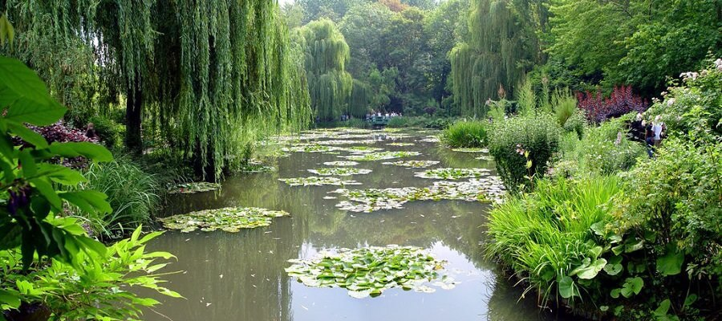
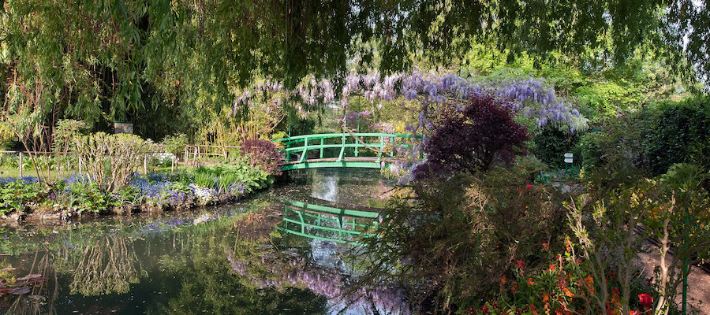

History of Claude Monet
"Aside from painting and gardening, I am good for nothing." [9]
– Claude Monet
Biography of Claude Monet
|

|
Oscar Claude Monet Born: 14 November 1840, Paris, France |
Early Life
Claude Monet was born in 1840 in Paris. He was the second son of Claude-Adolphe and Louise-Justine Aubrée Monet,
both of them second-generation Parisians. In 1845, his family moved to Le Havre in Normandy. His father wanted him to go
into the family grocery store business, but Claude Monet wanted to become an artist. His mother was a singer.
On the first of April 1851, Monet entered the Le Havre secondary school of the arts. On 28 January 1857 his mother died.
He was 16 years old when he left school, and went to live with his widowed childless aunt.
Life in Paris and Algeria
Monet was in Paris for several years and met several painters who would become friends and fellow impressionists.
One of those friends was Édouard Manet. Disillusioned with the traditional art taught at universities, in 1862 Monet became a student
of Charles Gleyre in Paris, where he met Pierre-Auguste Renoir, Frédéric Bazille, and Alfred Sisley. Together they shared new
approaches to art, painting the effects of light en plein air with broken color and rapid brushstrokes, in what later came to be known as
Impressionism. He was called for military service and served under the Chasseurs d'Afrique (African Hunters), in Algeria, from 1861 to 1862.
His time in Algeria had a powerful effect on Monet, who later said that the light and vivid colours of North Africa "contained the germ of
my future researches". Upon his return to Paris, Monet had been forced to move to his aunt's house in Sainte-Adresse. There he immersed himself in his work,
although a temporary problem with his eyesight, probably related to stress, prevented him from working in sunlight.
Later Life

After several difficult months following the death of Camille on 5 September 1879, a grief-stricken Monet (resolving never to be mired in poverty again)
began in earnest to create some of his best paintings of the 19th century. During the early 1880s Monet painted several groups of landscapes and seascapes
in what he considered to be campaigns to document the French countryside. His extensive campaigns evolved into his series' paintings.
In 1878 the Monets temporarily moved into the home of Ernest Hoschedé, (1837-1891), a wealthy department store owner and patron of the arts. Both families
then shared a house in Vétheuil during the summer. After her husband (Ernest Hoschedé) became bankrupt, and left in 1878 for Belgium, in September 1879,
and while Monet continued to live in the house in Vétheuil; Alice Hoschedé helped Monet to raise his two sons, Jean and Michel, by taking them to Paris to live
alongside her own six children. They were Blanche, Germaine, Suzanne, Marthe, Jean-Pierre, and Jacques. In the spring of 1880 Alice Hoschedé and all the children
left Paris and rejoined Monet still living in the house in Vétheuil. In 1881 all of them moved to Poissy which Monet hated. From the doorway of the little train between
Vernon and Gasny he discovered Giverny. In April 1883 they moved to Vernon, then to a house in Giverny, Eure, in Upper Normandy, where he planted a large garden where he
painted for much of the rest of his life. Following the death of her estranged husband, Alice Hoschedé married Claude Monet in 1892.
[11]
[11]
Monet Garden in Giverny

Claude Monet lived for forty-three years, from 1883 to 1926, in his house in Giverny. With a passion for gardening as well as for colours,
he conceived both his flower garden and water garden as true works of art. When Monet settles in Giverny, the long, pink stucco house has a one hectare garden
comprising an apple orchard and a kitchen garden. A wide path lined with cypress and spruce leads from the gate to the main door, the flowerbeds bordered by
trimmed box trees. Enthralled by this garden, the painter-gardener immediately sets to work, never ceasing, thereafter, to improve the « Clos Normand » and to make it
the garden of his colourful dreams.
[12]

Monet has always been fascinated by the play of light and reflections of clouds on water. His numerous paintings done on his floating studio,
in Argenteuil or on the Dutch canals, show his fascination with inverted reflections in these liquid mirrors. In 1893, he acquires a piece of land situated at the
end of the Clos Normand, on the other side of the railway line, and diverts the narrow arm of the river Epte , the « Ru ». The thus- created pond will become the
« Jardin d’eau » (water garden) , today present on the walls of the world’s greatest museums.
[13]

In line with the central path of the « Clos Normand », he has a Japanese bridge constructed, certainly inspired by one of his «Estampes»; he has it
painted green, to distinguish it from the red traditionally used in Japan. The oriental atmosphere is recreated with the choice of plants such as bamboos, « ginkgos biloba »,
maple trees, Japanese peonies, white lilies and the weeping willows which so marvellously frame the pond.Lastly, Monet plants « nymphéas » in the pond itself : « I love water,
but I also love flowers. That’s why , once the pond was filled with water, I thought of embellishing it with flowers. I just took a catalogue and chose at random ,that’s all . »
[14]
Reference
- [9] Wikipedia, (2021), What are Wikipedia? Available: https://en.wikipedia.org/wiki/Impression,_Sunrise [accessed 28 February, 2022].
- [10] Wikimedia Commons, (3 January 2022), What are Wikipedia? Available: https://commons.wikimedia.org/wiki/File:Autoportret_Claude_Monet.jpg [accessed 28 February, 2022].
- [11] Wikipedia, (2021), What are Wikipedia? Available: https://en.wikipedia.org/wiki/Impression,_Sunrise [accessed 28 February, 2022].
- [12] Fondation Claude Monet, (no date available), What are Fondation Claude Monet? Available: http://fondation-monet.com/en/giverny/the-clos-normand/ [accessed 01 March, 2022].
- [13] www.claude-monet.com, (no date available), What are Fwww.claude-monet.com? Available: https://www.claude-monet.com/ [accessed 01 March, 2022].
- [14] Fondation Claude Monet, (no date available), What are Fondation Claude Monet? Available: http://fondation-monet.com/en/giverny/the-water-garden/ [accessed 01 March, 2022].